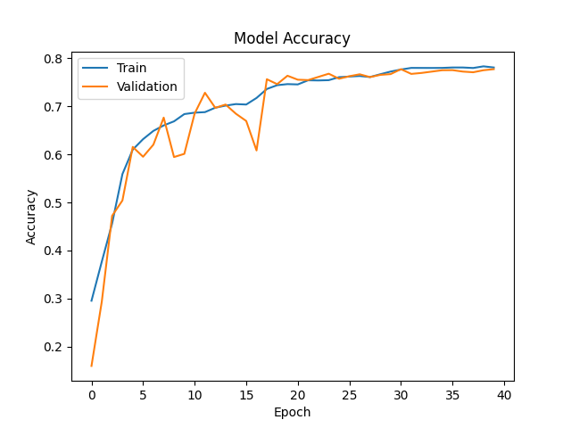
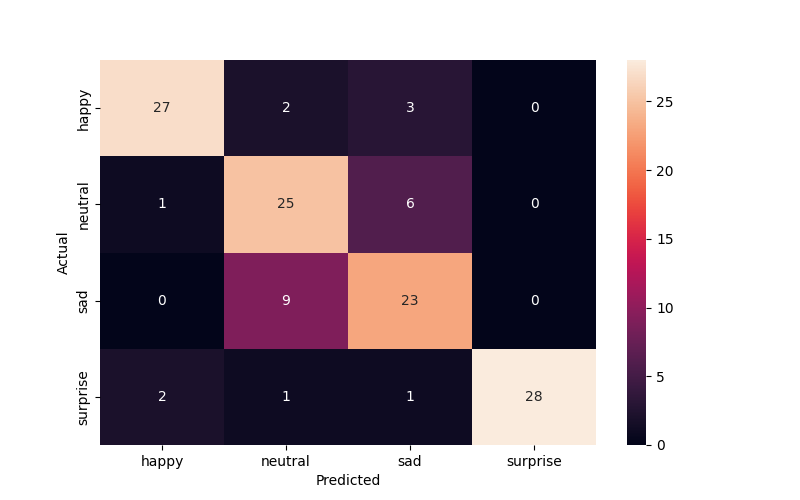
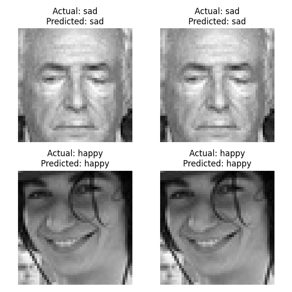

        <html>
        <head><title>Model Summary - 2024-04-10 14:34:43</title></head>
        <body>
        <h1>Model Configuration</h1>
        <pre>model:
  compile:
    learning_rate: 0.01
    optimizer: Adagrad
    optimizer_name: adam
  data:
    color_layers: 1
    color_mode: grayscale
    img_height: 48
    img_width: 48
    use_data_loaders: true
  layers:
  - filters: 64
    kernel_size:
    - 2
    - 2
    padding: same
    type: Conv2D
  - type: BatchNormalization
  - alpha: 0.1
    type: LeakyReLU
  - pool_size:
    - 2
    - 2
    type: MaxPooling2D
  - filters: 128
    kernel_size:
    - 2
    - 2
    padding: same
    type: Conv2D
  - type: BatchNormalization
  - alpha: 0.1
    type: LeakyReLU
  - pool_size:
    - 2
    - 2
    type: MaxPooling2D
  - filters: 256
    kernel_size:
    - 2
    - 2
    padding: same
    type: Conv2D
  - type: BatchNormalization
  - alpha: 0.1
    type: LeakyReLU
  - pool_size:
    - 2
    - 2
    type: MaxPooling2D
  - filters: 512
    kernel_size:
    - 2
    - 2
    padding: same
    type: Conv2D
  - type: BatchNormalization
  - alpha: 0.1
    type: LeakyReLU
  - pool_size:
    - 2
    - 2
    type: MaxPooling2D
  - filters: 128
    kernel_size:
    - 2
    - 2
    padding: same
    type: Conv2D
  - type: BatchNormalization
  - alpha: 0.1
    type: LeakyReLU
  - pool_size:
    - 2
    - 2
    type: MaxPooling2D
  - type: Flatten
  - activation: relu
    type: Dense
    units: 512
  - activation: relu
    type: Dense
    units: 128
  - type: Dense
    units: 64
  - type: BatchNormalization
  - type: ReLU
  - activation: softmax
    type: Dense
    units: 4
  train:
    batch_size: 64
    epochs: 40
    patience: 7
</pre>
        <h1>Model Summary</h1>
        <pre>Model: "sequential"
┏━━━━━━━━━━━━━━━━━━━━━━━━━━━━━━━━━━━━━━┳━━━━━━━━━━━━━━━━━━━━━━━━━━━━━┳━━━━━━━━━━━━━━━━━┓
┃ Layer (type)                         ┃ Output Shape                ┃         Param # ┃
┡━━━━━━━━━━━━━━━━━━━━━━━━━━━━━━━━━━━━━━╇━━━━━━━━━━━━━━━━━━━━━━━━━━━━━╇━━━━━━━━━━━━━━━━━┩
│ conv2d (Conv2D)                      │ (None, 48, 48, 64)          │             320 │
├──────────────────────────────────────┼─────────────────────────────┼─────────────────┤
│ batch_normalization                  │ (None, 48, 48, 64)          │             256 │
│ (BatchNormalization)                 │                             │                 │
├──────────────────────────────────────┼─────────────────────────────┼─────────────────┤
│ leaky_re_lu (LeakyReLU)              │ (None, 48, 48, 64)          │               0 │
├──────────────────────────────────────┼─────────────────────────────┼─────────────────┤
│ max_pooling2d (MaxPooling2D)         │ (None, 24, 24, 64)          │               0 │
├──────────────────────────────────────┼─────────────────────────────┼─────────────────┤
│ conv2d_1 (Conv2D)                    │ (None, 24, 24, 128)         │          32,896 │
├──────────────────────────────────────┼─────────────────────────────┼─────────────────┤
│ batch_normalization_1                │ (None, 24, 24, 128)         │             512 │
│ (BatchNormalization)                 │                             │                 │
├──────────────────────────────────────┼─────────────────────────────┼─────────────────┤
│ leaky_re_lu_1 (LeakyReLU)            │ (None, 24, 24, 128)         │               0 │
├──────────────────────────────────────┼─────────────────────────────┼─────────────────┤
│ max_pooling2d_1 (MaxPooling2D)       │ (None, 12, 12, 128)         │               0 │
├──────────────────────────────────────┼─────────────────────────────┼─────────────────┤
│ conv2d_2 (Conv2D)                    │ (None, 12, 12, 256)         │         131,328 │
├──────────────────────────────────────┼─────────────────────────────┼─────────────────┤
│ batch_normalization_2                │ (None, 12, 12, 256)         │           1,024 │
│ (BatchNormalization)                 │                             │                 │
├──────────────────────────────────────┼─────────────────────────────┼─────────────────┤
│ leaky_re_lu_2 (LeakyReLU)            │ (None, 12, 12, 256)         │               0 │
├──────────────────────────────────────┼─────────────────────────────┼─────────────────┤
│ max_pooling2d_2 (MaxPooling2D)       │ (None, 6, 6, 256)           │               0 │
├──────────────────────────────────────┼─────────────────────────────┼─────────────────┤
│ conv2d_3 (Conv2D)                    │ (None, 6, 6, 512)           │         524,800 │
├──────────────────────────────────────┼─────────────────────────────┼─────────────────┤
│ batch_normalization_3                │ (None, 6, 6, 512)           │           2,048 │
│ (BatchNormalization)                 │                             │                 │
├──────────────────────────────────────┼─────────────────────────────┼─────────────────┤
│ leaky_re_lu_3 (LeakyReLU)            │ (None, 6, 6, 512)           │               0 │
├──────────────────────────────────────┼─────────────────────────────┼─────────────────┤
│ max_pooling2d_3 (MaxPooling2D)       │ (None, 3, 3, 512)           │               0 │
├──────────────────────────────────────┼─────────────────────────────┼─────────────────┤
│ conv2d_4 (Conv2D)                    │ (None, 3, 3, 128)           │         262,272 │
├──────────────────────────────────────┼─────────────────────────────┼─────────────────┤
│ batch_normalization_4                │ (None, 3, 3, 128)           │             512 │
│ (BatchNormalization)                 │                             │                 │
├──────────────────────────────────────┼─────────────────────────────┼─────────────────┤
│ leaky_re_lu_4 (LeakyReLU)            │ (None, 3, 3, 128)           │               0 │
├──────────────────────────────────────┼─────────────────────────────┼─────────────────┤
│ max_pooling2d_4 (MaxPooling2D)       │ (None, 1, 1, 128)           │               0 │
├──────────────────────────────────────┼─────────────────────────────┼─────────────────┤
│ flatten (Flatten)                    │ (None, 128)                 │               0 │
├──────────────────────────────────────┼─────────────────────────────┼─────────────────┤
│ dense (Dense)                        │ (None, 512)                 │          66,048 │
├──────────────────────────────────────┼─────────────────────────────┼─────────────────┤
│ dense_1 (Dense)                      │ (None, 128)                 │          65,664 │
├──────────────────────────────────────┼─────────────────────────────┼─────────────────┤
│ dense_2 (Dense)                      │ (None, 64)                  │           8,256 │
├──────────────────────────────────────┼─────────────────────────────┼─────────────────┤
│ batch_normalization_5                │ (None, 64)                  │             256 │
│ (BatchNormalization)                 │                             │                 │
├──────────────────────────────────────┼─────────────────────────────┼─────────────────┤
│ re_lu (ReLU)                         │ (None, 64)                  │               0 │
├──────────────────────────────────────┼─────────────────────────────┼─────────────────┤
│ dense_3 (Dense)                      │ (None, 4)                   │             260 │
└──────────────────────────────────────┴─────────────────────────────┴─────────────────┘
 Total params: 1,096,452 (4.18 MB)
 Trainable params: 1,094,148 (4.17 MB)
 Non-trainable params: 2,304 (9.00 KB)
</pre>
        <h2>Test Accuracy</h2>
        <p>
1/2 ━━━━━━━━━━━━━━━━━━━━ 0s 22ms/step - accuracy: 0.8125 - loss: 0.4575
2/2 ━━━━━━━━━━━━━━━━━━━━ 0s 7ms/step - accuracy: 0.8073 - loss: 0.4871 

1/2 ━━━━━━━━━━━━━━━━━━━━ 0s 407ms/step
2/2 ━━━━━━━━━━━━━━━━━━━━ 0s 2ms/step  
</p>
        <h2>Accuracy Plot</h2>
        
        <h2>Classification Report</h2>
        <pre>              precision    recall  f1-score   support

       happy       0.90      0.84      0.87        32
     neutral       0.68      0.78      0.72        32
         sad       0.70      0.72      0.71        32
    surprise       1.00      0.88      0.93        32

    accuracy                           0.80       128
   macro avg       0.82      0.80      0.81       128
weighted avg       0.82      0.80      0.81       128

</pre>
        <h2>History</h2>
        <pre>Epoch 1: accuracy: 0.2957, loss: 1.3782, val_accuracy: 0.1601, val_loss: 2.1226, learning_rate: 0.0100
Epoch 2: accuracy: 0.3770, loss: 1.2383, val_accuracy: 0.2940, val_loss: 1.2633, learning_rate: 0.0100
Epoch 3: accuracy: 0.4563, loss: 1.1492, val_accuracy: 0.4722, val_loss: 1.1586, learning_rate: 0.0100
Epoch 4: accuracy: 0.5589, loss: 1.0023, val_accuracy: 0.5041, val_loss: 1.2750, learning_rate: 0.0100
Epoch 5: accuracy: 0.6098, loss: 0.9218, val_accuracy: 0.6154, val_loss: 0.8779, learning_rate: 0.0100
Epoch 6: accuracy: 0.6315, loss: 0.8742, val_accuracy: 0.5949, val_loss: 0.9598, learning_rate: 0.0100
Epoch 7: accuracy: 0.6487, loss: 0.8413, val_accuracy: 0.6201, val_loss: 0.9065, learning_rate: 0.0100
Epoch 8: accuracy: 0.6601, loss: 0.8082, val_accuracy: 0.6763, val_loss: 0.7590, learning_rate: 0.0100
Epoch 9: accuracy: 0.6685, loss: 0.7945, val_accuracy: 0.5943, val_loss: 1.0298, learning_rate: 0.0100
Epoch 10: accuracy: 0.6836, loss: 0.7800, val_accuracy: 0.6010, val_loss: 0.9916, learning_rate: 0.0100
Epoch 11: accuracy: 0.6865, loss: 0.7659, val_accuracy: 0.6847, val_loss: 0.8050, learning_rate: 0.0100
Epoch 12: accuracy: 0.6877, loss: 0.7617, val_accuracy: 0.7279, val_loss: 0.6767, learning_rate: 0.0100
Epoch 13: accuracy: 0.6969, loss: 0.7375, val_accuracy: 0.6966, val_loss: 0.7451, learning_rate: 0.0100
Epoch 14: accuracy: 0.7012, loss: 0.7313, val_accuracy: 0.7034, val_loss: 0.7588, learning_rate: 0.0100
Epoch 15: accuracy: 0.7044, loss: 0.7179, val_accuracy: 0.6843, val_loss: 0.7742, learning_rate: 0.0100
Epoch 16: accuracy: 0.7035, loss: 0.7207, val_accuracy: 0.6693, val_loss: 0.7840, learning_rate: 0.0100
Epoch 17: accuracy: 0.7171, loss: 0.7008, val_accuracy: 0.6080, val_loss: 0.9446, learning_rate: 0.0100
Epoch 18: accuracy: 0.7358, loss: 0.6514, val_accuracy: 0.7561, val_loss: 0.6040, learning_rate: 0.0020
Epoch 19: accuracy: 0.7437, loss: 0.6283, val_accuracy: 0.7458, val_loss: 0.6413, learning_rate: 0.0020
Epoch 20: accuracy: 0.7459, loss: 0.6324, val_accuracy: 0.7633, val_loss: 0.5887, learning_rate: 0.0020
Epoch 21: accuracy: 0.7453, loss: 0.6290, val_accuracy: 0.7551, val_loss: 0.6088, learning_rate: 0.0020
Epoch 22: accuracy: 0.7539, loss: 0.6131, val_accuracy: 0.7543, val_loss: 0.5979, learning_rate: 0.0020
Epoch 23: accuracy: 0.7535, loss: 0.6082, val_accuracy: 0.7609, val_loss: 0.5931, learning_rate: 0.0020
Epoch 24: accuracy: 0.7541, loss: 0.6134, val_accuracy: 0.7675, val_loss: 0.5837, learning_rate: 0.0020
Epoch 25: accuracy: 0.7603, loss: 0.6009, val_accuracy: 0.7571, val_loss: 0.6216, learning_rate: 0.0020
Epoch 26: accuracy: 0.7616, loss: 0.5963, val_accuracy: 0.7623, val_loss: 0.5901, learning_rate: 0.0020
Epoch 27: accuracy: 0.7628, loss: 0.5895, val_accuracy: 0.7663, val_loss: 0.5975, learning_rate: 0.0020
Epoch 28: accuracy: 0.7606, loss: 0.5849, val_accuracy: 0.7605, val_loss: 0.6208, learning_rate: 0.0020
Epoch 29: accuracy: 0.7664, loss: 0.5823, val_accuracy: 0.7651, val_loss: 0.5920, learning_rate: 0.0020
Epoch 30: accuracy: 0.7720, loss: 0.5680, val_accuracy: 0.7667, val_loss: 0.5817, learning_rate: 0.0004
Epoch 31: accuracy: 0.7762, loss: 0.5602, val_accuracy: 0.7770, val_loss: 0.5758, learning_rate: 0.0004
Epoch 32: accuracy: 0.7796, loss: 0.5539, val_accuracy: 0.7671, val_loss: 0.5804, learning_rate: 0.0004
Epoch 33: accuracy: 0.7795, loss: 0.5569, val_accuracy: 0.7691, val_loss: 0.5721, learning_rate: 0.0004
Epoch 34: accuracy: 0.7795, loss: 0.5514, val_accuracy: 0.7720, val_loss: 0.5761, learning_rate: 0.0004
Epoch 35: accuracy: 0.7796, loss: 0.5480, val_accuracy: 0.7748, val_loss: 0.5701, learning_rate: 0.0004
Epoch 36: accuracy: 0.7805, loss: 0.5457, val_accuracy: 0.7750, val_loss: 0.5716, learning_rate: 0.0004
Epoch 37: accuracy: 0.7805, loss: 0.5505, val_accuracy: 0.7720, val_loss: 0.5722, learning_rate: 0.0004
Epoch 38: accuracy: 0.7794, loss: 0.5516, val_accuracy: 0.7705, val_loss: 0.5755, learning_rate: 0.0004
Epoch 39: accuracy: 0.7828, loss: 0.5448, val_accuracy: 0.7748, val_loss: 0.5710, learning_rate: 0.0004
Epoch 40: accuracy: 0.7805, loss: 0.5440, val_accuracy: 0.7770, val_loss: 0.5682, learning_rate: 0.0004
</pre>
        <h2>Confusion Matrix</h2>
        
        <h2>Predicted Images</h2>
        
        </body>
        </html>
        